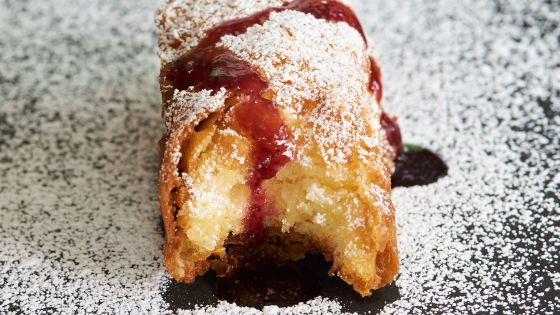
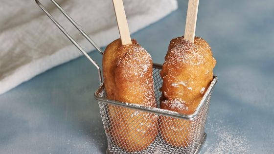

Description
A great novelty treat. This recipe is awesome, great for a party, kids love it. Adults enjoy it.
Ingredients
- 6 Hostess Twinkies
- 6 wooden popsicle sticks
- Vegetable oil, enough to cover twinkies
- four
Batter
- 1 cup of milk
- 2 tablespoons vinegar
- 1 tablespoon oil
- 1 cup flour (mix to consistency)
- 1 teaspoon baking powder
- ½ teaspoon salt
Directions
- Freeze the twinkies for at least 2 hours. Can freeze overnight.
- Heat your oil in fryer to 375 degrees.
- Mix your batter as such: milk, vinegar, oil.
- In another bowl blend flour, baking powder and salt.
- Whisk wet ingredients into dry, mix until smooth.
- Refrigerate until oil reaches temperature.
- insert sticks into twinkies, leaving enough of a end to hold.
- Dust with flour and dip into batter be sure batter covers the entire twinkie place twinkie in hot oil with utensil being sure the twinkie browns evenly (the twinkie will float) about 3- 4 minutes.
- Remove to paper towel- cool 5 minutes.
- Serve with a Berry Sauce Raspberries or mixed Berry preserves heated until warm.Use for dipping.
Return to top
Return to home page